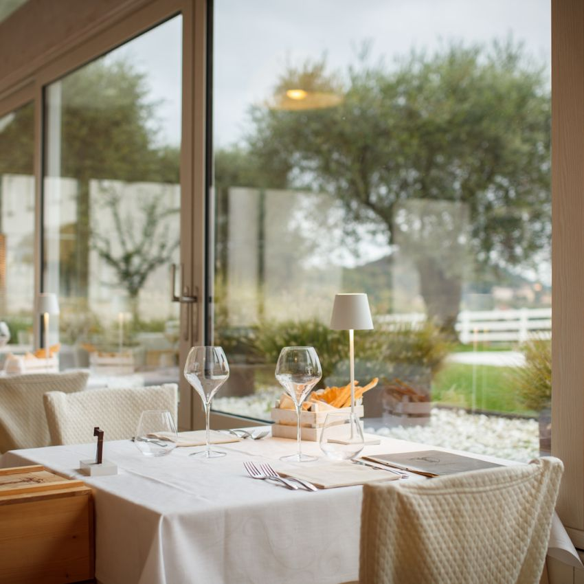

刚到家
Coop 买水、牛奶、早餐、清洁用品；缺肉再走两分钟到 Armando。

这里不是“附近店铺大全”，而是从家出发真正会用到的生活清单：快速补货、买一顿好食材、临时外带，或全家认真吃一餐。
Torreglia 没有一间包办所有需求的“高端超市”。最好的买法是 Coop 补基础、Armando 买肉、Carlevari 买菜；想做一顿正式晚餐，再去 Padova 的 Sotto il Salone。
不用研究二十家店。先决定今晚是补货、做饭、外带还是在外面吃，再看下面对应的一组。
Coop 买水、牛奶、早餐、清洁用品；缺肉再走两分钟到 Armando。
Armando ＋ Carlevari。肉和蔬菜分别买，质量明显好过在大超市一次拿齐。
Rosticceria Centrale 直接带菜回家；想简单一点就去 Per Bacco 吃冷盘喝一杯。
本地选 Al Pirio / Afazenda / Ballotta；值得专程的纪念餐才订 Le Calandre。
公里数以 Torreglia 本镇中心区间估算；餐厅高峰、山路与停车会让实际时间多 3–8 分钟。
20 个选择
每张卡先告诉你 value proposition，再提供地图和官网。地图只搜索目的地，不在公开页面写出住宅门牌。
Via Montegrotto 1 · Torreglia
抵达第一天最合理的一站：水、早餐、奶制品、意面、调味料和家用品够用，不必为了“更大”先开去 Abano。
适合买：基础补货与忘记买的小东西。肉和蔬果品质升级请分别去 Armando 与 Carlevari。
通常周一至周六 08:30–13:00、15:30–19:30；周日休息。
Via Montegrotto 11 · Torreglia
这是家附近最接近“精品食材店”的选择：本地与短供应链肉类、威尼托猪肉、家禽、熟成牛排和可提前定制的 BBQ / 烤肉部位。
适合买：家庭烧烤、tagliata、香肠、烤鸡与 ready-to-cook。人数多时提前电话留货。
周一至周三通常只开上午；周四至周六下午也营业；周日休息。
Via Montegrotto 70 · Torreglia
果蔬批发背景加自助零售区，选择比普通超市更深，也有独立有机区。重点是新鲜度、箱装选择和性价比，并不是精致包装。
适合买：番茄、沙拉菜、水果、香草和一周蔬菜；多人在家吃饭时特别值。
通常 08:30–13:00、15:00–19:00；周六下午与周日休息。
Via Vittorio Bachelet 72 · Torreglia
不是普通炸物店，而是每日变化的家庭熟食厨房。鱼菜固定在周三和周五，周日有 paella，特别适合长途日游后直接带回家。
适合买：前菜、意面、鱼、主菜、配菜和甜点；全家份量可以提前订。
周二至周六 09:00–13:30、17:00–20:00；周日只开上午；周一休息。
Via Mirabello 3 · Torreglia
本镇最像“专程去的甜点店”：1980 年起家的家族手艺，Torreglia 店是 2022 年开的第二家，空间和出品都比一般 bar 更讲究。
适合：cappuccino＋brioche、下午甜点，以及提前订生日或家庭聚餐蛋糕。
周二至周五 07:30–12:30、15:30–19:30；周末 08:00 开；周一休息。
Piazza Capitello 15 · Torreglia
更像社区面包房，不靠漂亮包装。面包、focaccia、饼干和节日发酵点心口碑稳定，适合早上顺手把全家的面包买回家。
适合买：当天面包、咸点、早餐和路上带着吃的 focaccia。
通常周一至周六 07:00 开；周三和周六多为只开上午；周日休息。以店门公告为准。
Via Mirabello 27 · Torreglia
老派 enoteca 与 salumeria 的结合：瓶装酒、杯装酒、本地及意大利奶酪、猪肉与野味火腿。比去酒庄更随意，晚上临时喝一杯也成立。
适合：开胃酒、冷盘晚餐、买几瓶不同价位的 Colli Euganei 酒回家。
营业时段较长但公开资料不完全一致；当天点地图或电话确认。
Piazza Capitello 16 · Torreglia
它的价值不是“精品咖啡馆”，而是当地人式的可靠：早上六点就能喝 espresso、吃 brioche，赶早班飞机或一早出发最有用。
适合：快速早餐、报纸咖啡、有人先起床先出门的早晨。
通常周一至周六 06:00 开；周日 07:00–13:00。第三方营业时间，出发前再看地图。
Piazza Mercato / Piazza Vittorio Veneto
规模不大，但周五早上最有“住在这里”的感觉。适合先看时令蔬果、奶酪与流动摊，再去固定店把缺的补齐。
适合：周五早餐后散步式采购，不建议把全周补货全部押在市场上。
2026 地区市场日历：每周五 07:30–13:00。
Viale Giuseppe Giusti 9 · Abano Terme
需要一次买齐一周量、更多品牌、酒水和家用品时再来。选择明显多过镇上的 Coop，但“更大”不等于食材一定更高级。
适合买：大包装、饮料、早餐零食、家用品和周日补货。
通常周一至周六 08:30–20:30，周日 09:00–20:00；节假日另查。
Via Cornelio Augure 7 · Abano Terme
不是奢侈超市，而是最完整的有机选项。对有机鸡蛋、酸奶、古老谷物面包、天然食品、无麸质或 vegan 需求最有价值。
适合买：有机与特殊饮食；海鲜、肉和酒并不是它的核心优势。
多为上午＋下午分段营业，周五/周六可能连续营业；周日休息。出发前查看门店页。
Via Roma 3 · Montegrotto Terme
比传统 rosticceria 更适合“有人外带、有人现场吃”：白天熟食柜，午晚餐有现做菜，家庭意见不一致时很好用。
适合：临时午餐、外带晚餐、晚归又不想只吃披萨。
除周三外通常 10:00–15:00、17:30–00:00；熟食柜晚间约至 21:00。
Via A. Volta 10 · Montegrotto Terme
附近少见的 specialty roaster＋巧克力工坊。重点是买单一产地咖啡豆、按冲煮方式研磨，以及手工巧克力，不是坐一下午的 café。
适合买：家里咖啡豆、伴手礼、praline 与 chocolate spread。
Montegrotto 店通常 08:30–12:30、15:30–19:30；周六略有调整。
Piazza delle Erbe 35 · Padova
这是最接近“精品食品百货”的答案：奶酪、salumi、肉、当天海鲜、鲜意面、面包、酒和有机蔬果集中在八百年历史的市场里。
重点摊位：Casa del Parmigiano、Pescheria Adriatica、Bottega del Pane、El Tamiso。最好上午去，车停 ZTL 外再步行。
各店不同；多数周一至周六上午最稳。El Tamiso 周三只开上午，周日不要押宝。
这里不是按“网红程度”排，而是按一家四口在什么场景下会真正满意。先看三种气氛，再用餐厅筛选查看完整卡片。



Via Pirio 10 · Torreglia
丘陵露台是最大 value prop，菜则是在传统威尼托基础上做得更现代；素食、纯素和不同口味的人也比较容易一起点菜。
怎么用：订日落前的露台桌，作为全家第一顿“我们真的到意大利了”的晚餐。
周三休息；周一通常只开晚餐。露台桌建议预订时明确提出。
Via Boschette 16 · Torreglia
家族经营、km0 时令菜、大花园与认真做的甜点台。不是最先锋，但四位成人不同偏好时，它比小众 tasting menu 更稳。
点什么：桌边调味的牛肉 tartare、季节前菜、威尼托主菜，甜点一定留空间。
周三休息；周四只开晚餐；其余日期午晚餐为主。
Via Romana 57 · Torreglia
1605 年起的 Colli Euganei 老店，真正的价值是地方记忆：padovana 菜、野菜 risotto、baccalà 和 torresano，而不是“新式网红”。
怎么用：安排一顿慢午餐，让父母感受到本地传统；必点 bigoli con l’anara 一类的 Padova 菜。
厨房通常 12:30–14:00、19:30–22:00；周二休息。
Via Castelletto 49 · Torreglia
1921 年起的家庭 trattoria，视野和乡间感兼有。比 Ballotta 少一点仪式感，适合想吃传统菜但不想把晚餐变成正式活动的一天。
怎么用：作为本地晚餐备选，尤其适合行程临时变化后电话问位。
周三休息，周四午餐不营业；其余多有午晚餐。
Via Liguria 1 · Rubano
用 Le Calandre 同一套食材与思路做更日常的 café、糕点和餐食。想体验 Alajmo、又不想用掉一整晚和完整 tasting menu，这是聪明的选择。
适合：Padova / Rubano 顺路早餐、精致午餐、糕点伴手礼。
咖啡甜点每日开放，午餐每天有；晚餐主要周一至周六。以预订页为准。
Via Liguria 1 · Rubano
三星 Michelin，自 2003 年保持至今。只有全家都愿意把这一晚当成旅行主活动时才值得；不是因为“近”就随便塞进去。
怎么用：9 月 10 日晚从夏休后重新开门，正好覆盖这次旅行；优先订 9/17–19 之间一个不赶路的晚上。
周一、周日休息；周二晚餐；周三至周六午晚餐。需要尽快订。
入住后先去 Coop 完成基础补货；第二天上午顺路用 Armando＋Carlevari 建立家里的食材底盘。旅行中至少留一个晚上给 Rosticceria Centrale，避免每晚都订餐厅。正式餐只需要在 Al Pirio、Ballotta、Afazenda 里选两家；Le Calandre 是独立决定，不应该和普通晚餐混在一起比较。
营业状态与特色核对自各店官网或官方目录：Coop Reno、Armando、Carlevari、Rosticceria Centrale、Pasticceria Bacelle、Sotto il Salone、Alajmo 与餐厅官网。小店常有午休、周中休息及季节调整；卡片里的时间用于规划，到访当天以官网或地图实时状态为准。
距离以 Torreglia 本镇中心区间估算，不含寻找车位；公开页面不写入住宅街道或门牌，也不会发送给第三方路线服务。